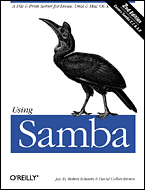

|  |
Using Samba, 2nd EditionBy Jay Ts, Robert Eckstein, and David Collier-Brown2nd Edition, February 2003 O'Reilly & Associates, ISBN: 0-596-00256-4 www.oreilly.com/catalog/samba2/ |
Table of Contents
1. Learning the Samba
What Is Samba?
What Can Samba Do for Me?
Getting Familiar with an SMB Network
An Introduction to the SMB Protocol
Windows Workgroups and Domains
What's New in Samba 2.2?
What's New in Samba 3.0?
What Can Samba Do?
An Overview of the Samba Distribution
How Can I Get Samba?2. Installing Samba on a Unix System
Bundled Versions
Downloading the Samba Distribution
Configuring Samba
Compiling and Installing Samba
Enabling SWAT
A Basic Samba Configuration File
Firewall Configuration
Starting the Samba Daemons
Testing the Samba Daemons3. Configuring Windows Clients
Windows Networking Concepts
Setting Up Windows 95/98/Me Computers
Setting Up Windows NT 4.0 Computers
Setting Up Windows 2000 Computers
Setting Up Windows XP Computers4. Windows NT Domains
Samba as the Primary Domain Controller
Adding Computer Accounts
Configuring Windows Clients for Domain Logons
Logon Scripts
Roaming Profiles
System Policies
Samba as a Domain Member Server
Windows NT Domain Options5. Unix Clients
Sharing Files on Windows 95/98/Me
Sharing Files on Windows NT/2000/XP
smbclient
smbfs
smbsh
smbutil and mount_smbfs6. The Samba Configuration File
The Samba Configuration File
Special Sections
Configuration Options
Server Configuration
Disk Share Configuration
Networking Options with Samba
Virtual Servers
Logging Configuration Options7. Name Resolution and Browsing
Name Resolution
Browsing8. Advanced Disk Shares
Filesystem Differences
File Permissions and Attributes on MS-DOS and Unix
Windows NT/2000/XP ACLs
Name Mangling and Case
Locks and Oplocks
Connection Scripts
Microsoft Distributed Filesystems
Working with NIS9. Users and Security
Users and Groups
Controlling Access to Shares
Authentication of Clients
Passwords
Authentication with winbind10. Printing
Sending Print Jobs to Samba
Printing to Windows Printers11. Additional Samba Information
Time Synchronization
Magic Scripts
Internationalization
Windows Messenger Service
Miscellaneous Options12. Troubleshooting Samba
The Tool Box
The Fault Tree
Extra ResourcesAppendix A. Example Configuration Files
Appendix B. Samba Configuration Option Quick Reference
Appendix C. Summary of Samba Daemons and Commands
Appendix D. Downloading Samba with CVS
Appendix F. Running Samba on Mac OS X Server